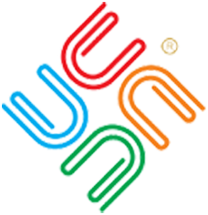
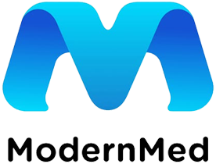
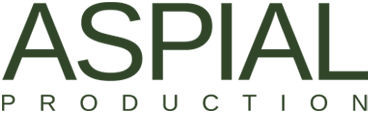

Consulting · ZAC Edge
Know where AI pays off before you spend on it.
ZAC Edge is our consulting blueprint: data and AI strategy that diagnoses your business, analyses it and recommends the right roadmap.
Video: Pexels

ZAC Edge is run by Sentinel Alliance & Company Sdn. Bhd., a subsidiary of ZAC AI Technologies Sdn. Bhd.
Reg. No. 1484558-K
What you get
Four deliverables you can act on.
Photo: Pexels
How it works
Six steps, from diagnosis to KPIs.
Problems diagnostic
- Financial statements analysis (5 years)
- Industrial data trends
- Industrial benchmarks
- SWOT, 7S framework
In-depth analysis
- Interpretation of the current situation
- Root causes, patterns and synthesis
- Case studies or comparative models
- Investment opportunities (BCG matrix)
- Risk analysis and pain-point tables
Strategic proposal
- Strategic pathways (2–3)
- Pros and cons (cost-benefit analysis)
- Risk and budget profile on investment
- Quick-win vs long-term trade-off
Recommendation
- The chosen strategy, with justification
- Business impact forecast
- How it solves the original problem
- Alignment with mission and values
Implementation roadmap
- Phased rollout, in detail
- Key deliverables per phase
- Budget outline and resource needs
KPI framework
- Success metrics
- Feedback loops and revision cycles
Example outcomes
$200K
in annual savings identified through process automation
75%
less manual data entry with ML-powered classification
6-month
roadmap for an AI-driven customer insights platform
12
business-critical metrics tracked on a KPI dashboard
Photos: Pexels
Who it’s for
- SMEs scaling with data-driven strategies
- Businesses adopting AI without the complexity
- Companies needing a clear digital transformation roadmap
- Organisations ready to measure and optimise outcomes
Trusted by industry leaders
Companies we’ve worked with.






And many more businesses across healthcare, real estate, F&B and technology.
Ready to build your strategic roadmap?
Let’s discuss how ZAC Edge can transform your business with data and AI.
Photo: Pexels